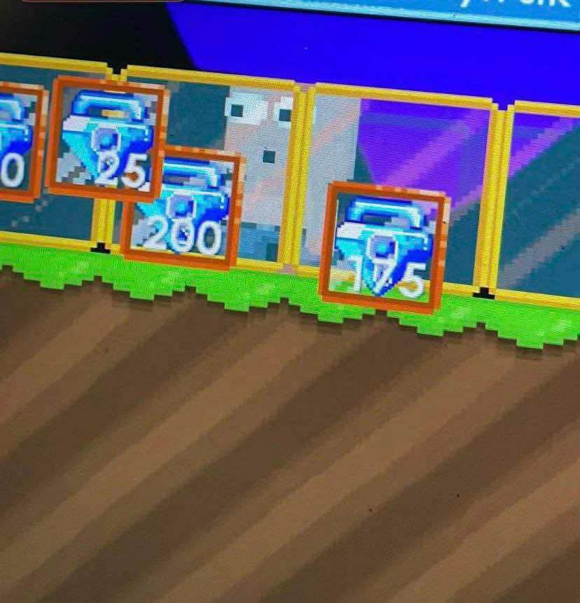
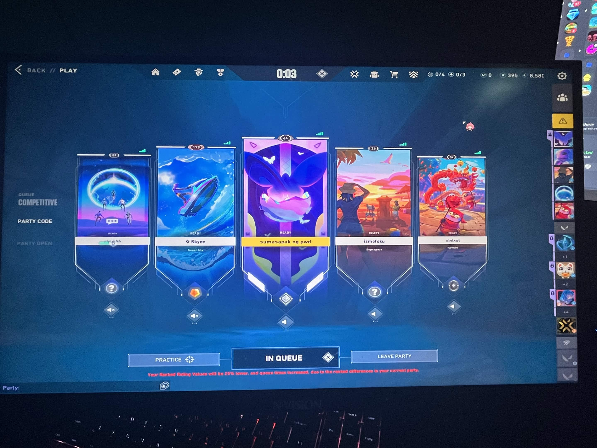
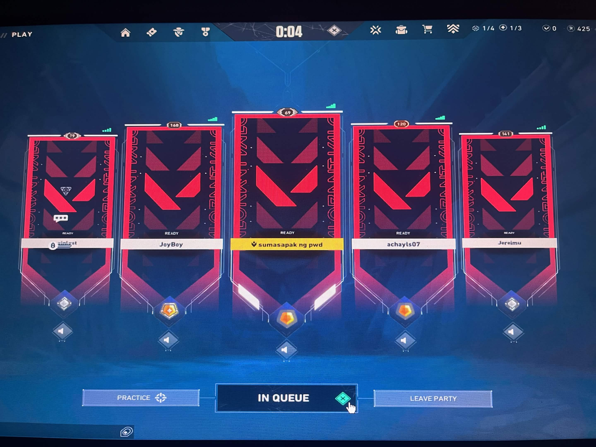
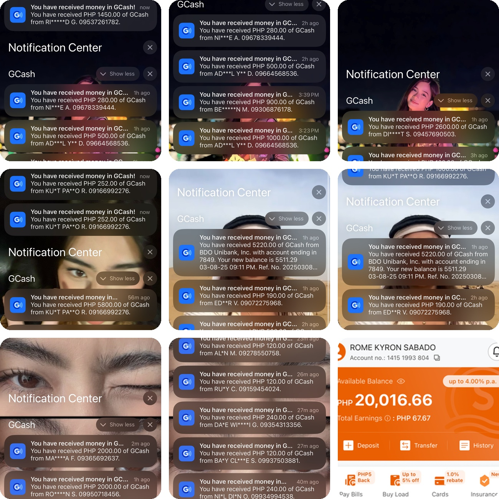
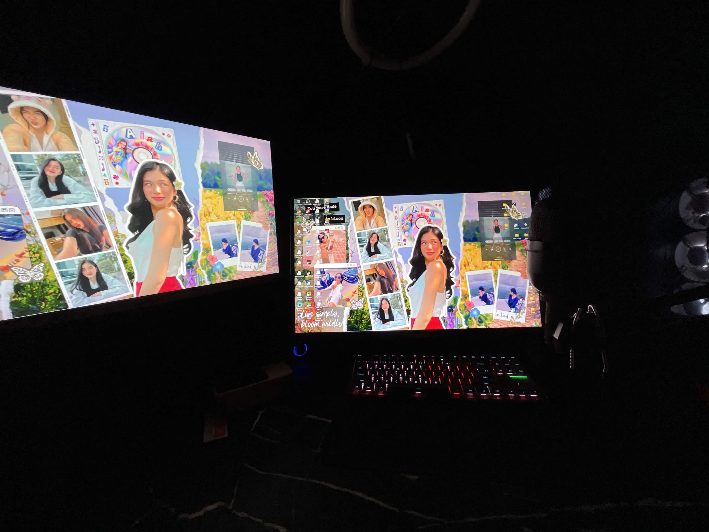
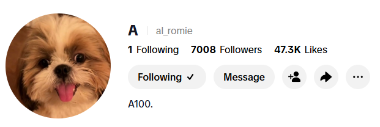

Curious, driven, and always up for trying something new. This page is where I share a bit about who I am, what I enjoy doing, and how to reach me.
I am the second child in my family and have an older brother. I enjoy challenging myself by trying new things, exploring different ideas, and learning skills outside of my usual routine. I am naturally curious and always eager to discover new opportunities that help me grow both personally and academically.
Outside of school, I enjoy playing online games, especially games with trading systems and player-driven economies. I like analyzing item values, monitoring market trends, and making strategic trading and investment decisions to maximize the value of my virtual assets. These games have helped me develop skills in critical thinking, problem-solving, planning, and decision-making.
Tip: hover a card (or tap on mobile) to see photos
Playing online games with player-driven economies and trading systems, such as Growtopia, where I enjoy analyzing item values, trading, and making strategic investment decisions. I also enjoy playing FPS games, such as Valorant.



Buying and selling online currency and virtual items to earn extra income for daily expenses through online trading and play-to-earn games. This has become part of my daily routine while helping me develop skills in trading, financial decision-making, and online transactions.

Creating live content, interacting with viewers, and building an engaging community while improving my communication, creativity, and time management skills.


Thank you for visiting my portfolio. If you would like to know more about me or discuss opportunities, feel free to contact me via email at Sabadoromekyron@gmail.com.